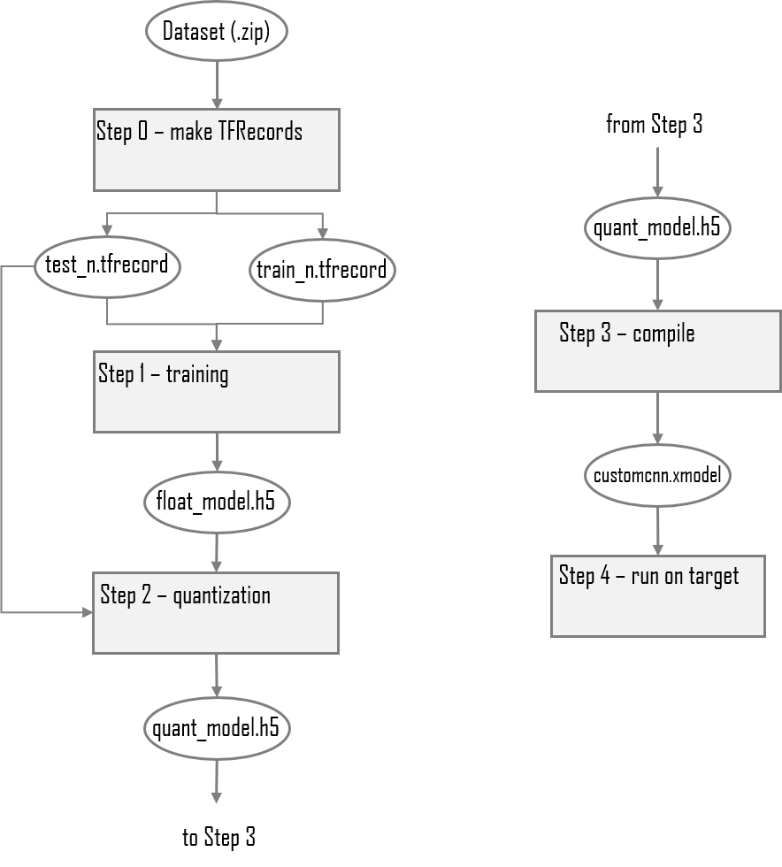

Vitis AI Tutorials |
TensorFlow2 and Vitis AI design flow |
This tutorial shows you how to compile and run the same identical design and application code on a number of different Xilinx cards. The virtually seamless transition between Edge and Cloud is made possible by the Vitis™ AI RunTime (VART) which is common to all target platforms and its unified APIs.
Current status¶
Tested on ZCU102, Alveo U50
Tools used: TensorFlow2.3 & Vitis AI 1.3
Dataset: Kaggle dogs-vs-cats
Network: Custom CNN
Introduction¶
We will run the following steps:
Download and preparation of the Kaggle dogs-vs-cats dataset. Conversion of images to TFRecords.
Training and evaluation of a custom CNN using TensorFlow’s built-in version of Keras.
Quantization of the floating-point model using the Xilinx® quantizer provided as part of Vitis AI.
Evaluation of the quantized model using the dogs-vs-cats test dataset.
Compilation of the quantized model for execution on the target boards.
Execution of the network on the target boards with the provided Python scripts.
The complete flow and the tools used at each step is shown in the figure below:

The Kaggle Dogs-vs-Cats Dataset¶
The Kaggle dog-vs-cats dataset consists of 25000 images of varying dimensions, divided into the two classes of cat and dog. Each image is intrinsically labelled or classified by its filename, for example the image with filename cat.12.jpg is obviously of class cat.
There is also a set of labelled images which were part of the original Kaggle dogs-vs-cats challenge, but we will ignore this set and only use the 25000 images that are contained in the train.zip archive.
The 25000 images are all resized to 200 x 250 pixels and then divided into one of the train, validation or test datasets. The size of 200 x 250 pixels was chosen after studying the distribution of the aspect ratios in the dataset and to keep training times reasonable.
The Convolutional Neural Network¶
The customcnn.py script uses the Keras Functional API to describe the simple CNN. It is a fully convolutional network and has no fully connected or dense layers. There are also no pooling layers—data reduction is achieved by using convolutional layers that have strides greater than one.
The CNN has deliberately been kept simple (so the expected prediction accuracy will not be much higher than approximately 95%. To reduce overfitting, batch normalization, dropout and L2 kernel regularization have been used.

The number of skip blocks and the number of filters used in each one is set by the ‘filters’ list argument - one skip block will be created for each element in the list.
Before You Begin¶
The host machine has several requirements that need to be met before we begin. You will need:
An x86 host machine with a supported OS and the GPU version of the Vitis-AI docker installed - see System Requirements.
The host machine will require Docker to be installed and the Vitis-AI GPU docker image to be built - see Getting Started.
A GPU card suitable for ML training - a GPU with at least 8GB of memory is recommended.
If you plan to use the ZCU102 evaluation board, it should be prepared with the board image as per the Setup the Target instructions. Hints on how to connect the various cables to the ZCU102 are also available here.
For the Alveo U50, follow the Setup Alveo Accelerator Card with HBM for DPUCAHX8H/L instructions. You will need to install the specified version of XRT on your host system (i.e. not in the Vitis-AI docker container), install the Alveo U50 card target platform also on your host system and then flash the Alveo U50 card. Note that a cold reboot will be necessary after flashing the Alveo U50.
For more details, refer to the latest version of the Vitis AI User Guide (UG1414).
This tutorial assumes the user is familiar with Python3, TensorFlow and has some knowledge of machine learning principles.
Setting up the workspace and dataset¶
Copy the repository by doing either of the following:
Download the repository as a ZIP file to the host machine, and then unzip the archive.
From a terminal, use the
git clonecommand.
Download the Kaggle dogs-vs-cats dataset.
Go to the Kaggle website and register a new account if necessary.
Download the dataset.
Move dogs-vs-cats.zip into the
filesfolder in the design repository, which is the same folder that contains the python (.py) and shell (.sh) scripts.
The Kaggle dog-vs-cats dataset consists of 25,000 images of varying dimensions, divided into two classes: cat and dog. Each image is intrinsically labelled or classified by its filename (for example,
cat.12.jpg).There is a set of unlabelled images which were part of the original Kaggle dogs-vs-cats challenge, but we will not use it in this tutorial. Only the 25000 images that are contained in the
train.ziparchive will be used.Open a linux terminal,
cdto the repository folder, and thencdto thefilesfolder.Start the Vitis AI GPU docker:
# navigate to densenet tutorial folder cd <path_to_densenet_design>/files # to start GPU docker container ./docker_run.sh xilinx/vitis-ai-gpu:latest
The docker container will start and after accepting the license agreement, you should see something like this in the terminal:
```shell
==========================================
__ ___ _ _ _____
\ \ / (_) | (_) /\ |_ _|
\ \ / / _| |_ _ ___ ______ / \ | |
\ \/ / | | __| / __|______/ /\ \ | |
\ / | | |_| \__ \ / ____ \ _| |_
\/ |_|\__|_|___/ /_/ \_\_____|
==========================================
Docker Image Version: 1.3
Build Date: 2020-12-20
VAI_ROOT: /opt/vitis_ai
For TensorFlow Workflows do:
conda activate vitis-ai-tensorflow
For Caffe Workflows do:
conda activate vitis-ai-caffe
For Neptune Workflows do:
conda activate vitis-ai-neptune
For PyTorch Workflows do:
conda activate vitis-ai-pytorch
For TensorFlow 2.3 Workflows do:
conda activate vitis-ai-tensorflow2
For Darknet Optimizer Workflows do:
conda activate vitis-ai-optimizer_darknet
For Caffe Optimizer Workflows do:
conda activate vitis-ai-optimizer_caffe
For TensorFlow 1.15 Workflows do:
conda activate vitis-ai-optimizer_tensorflow
For LSTM Workflows do:
conda activate vitis-ai-lstm
Vitis-AI /workspace >
```
:bulb: If you get a “Permission Denied” error when starting the docker container, it is almost certainly because the docker_run.sh script is not set to be executable. You can fix this by running the following command:
chmod +x docker_run.sh
Activate the Tensorflow2 python virtual environment with conda activate vitis-ai-tensorflow2 and you should see the prompt change to indicate that the environment is active:
Vitis-AI /workspace > conda activate vitis-ai-tensorflow2
(vitis-ai-tensorflow2) Vitis-AI /workspace >
The remainder of this README describes each single step to implement the tutorial, however a shell script called run_all.sh is provided which will run the complete flow:
(vitis-ai-tensorflow2) Vitis-AI /workspace > source run_all.sh
Step 0 - Converting the dataset images to TFRecords¶
To run step 0:
(vitis-ai-tensorflow2) Vitis-AI /workspace > python -u images_to_tfrec.py 2>&1 | tee tfrec.log
To speed up training, the JPEG images of the dogs-vs-cats dataset will be converted into the TFRecord format. The images_to_tfrec.py script will do the following:
Unzip the dogs-vs-cats.zip archive into the folder set by the
--dataset_dirargument.Split the images into the train and test datasets, ensuring a balance between classes.
Convert each image and label into a TFRecord. The TFRecord files are written into .tfrecord files in the folder deefined by the
--tfrec_dirargument.Move the test images to a separate folder for later use on the target.
Each TFRecord has five fields that are defined by the feature dictionary:
# features dictionary
feature_dict = {
'label' : _int64_feature(label),
'height': _int64_feature(image_shape[0]),
'width' : _int64_feature(image_shape[1]),
'chans' : _int64_feature(image_shape[2]),
'image' : _bytes_feature(image)
}
The label is obtained by looking at the first part of the image file name and assigning either ‘0’ for dog or ‘1’ for cat:
class_name,_ = img.split('.',1)
if class_name == 'dog':
label = 0
else:
label = 1
Each JPEG image file is read into a TensorFlow string (tf.string) and its shape is obtained from the JPEG header - this avoids having to JPEG decode the image which means the script runs faster and also the TFRecord files are more compact:
# read the JPEG source file into a tf.string
image = tf.io.read_file(filePath)
# get the shape of the image from the JPEG file header
image_shape = tf.io.extract_jpeg_shape(image, output_type=tf.dtypes.int32, name=None)
The number of image/label pairs in each .tfrecord file is defined by the --img_shard argument.
Step 1 - Training¶
To run step 1:
(vitis-ai-tensorflow2) Vitis-AI /workspace > python -u train.py 2>&1 | tee train.log
:bulb: Training can take a considerable amount of time so a pretrained checkpoint is provided in the
pretrainedfolder. To use this pretrained checkpoint, run the following commands instead of the command given above:mkdir -p float_model cp -f pretrained/f_model.h5 float_model/.
During training, the TFRecord files are read into the tf.data pipeline by the input_fn_trn function defined in dataset_utils.py. This function finds all TFRecord files whose names match the pattern train_*.tfrecord and creates a tf.data.Dataset object. The function also includes all the image pre-processing (resizing and random cropping, augmentation and normalization):
def input_fn_trn(tfrec_dir,batchsize,height,width):
'''
Dataset creation and augmentation for training
'''
tfrecord_files = tf.data.Dataset.list_files('{}/train_*.tfrecord'.format(tfrec_dir), shuffle=True)
dataset = tf.data.TFRecordDataset(tfrecord_files)
dataset = dataset.map(parser, num_parallel_calls=tf.data.experimental.AUTOTUNE)
dataset = dataset.map(lambda x,y: resize_crop(x,y,h=height,w=width), num_parallel_calls=tf.data.experimental.AUTOTUNE)
dataset = dataset.batch(batchsize, drop_remainder=False)
dataset = dataset.map(augment, num_parallel_calls=tf.data.experimental.AUTOTUNE)
dataset = dataset.map(normalize, num_parallel_calls=tf.data.experimental.AUTOTUNE)
dataset = dataset.prefetch(buffer_size=tf.data.experimental.AUTOTUNE)
dataset = dataset.repeat()
return dataset
The validation phase uses the input_fn_test function which will make a dataset from all TFRecord files which match the glob pattern test_*.tfrecord. Note how there is no augmentation, only resizing and normalization and the dataset does not repeat:
def input_fn_test(tfrec_dir,batchsize,height,width):
'''
Dataset creation and augmentation for test
'''
tfrecord_files = tf.data.Dataset.list_files('{}/test_*.tfrecord'.format(tfrec_dir), shuffle=False)
dataset = tf.data.TFRecordDataset(tfrecord_files)
dataset = dataset.map(parser, num_parallel_calls=tf.data.experimental.AUTOTUNE)
dataset = dataset.map(lambda x,y: resize_crop(x,y,h=height,w=width), num_parallel_calls=tf.data.experimental.AUTOTUNE)
dataset = dataset.batch(batchsize, drop_remainder=False)
dataset = dataset.map(normalize, num_parallel_calls=tf.data.experimental.AUTOTUNE)
dataset = dataset.prefetch(buffer_size=tf.data.experimental.AUTOTUNE)
return dataset
The complete list of command line arguments of train.py are as follows:
|Argument|Default|Description| |:——-|:—–:|:———-| |–input_height|200|Input images are resized to input_height x input_width| |–input_width|250|Input images are resized to input_height x input_width| |–input_chan|3|Number of channels in input image - leave at default| |–tfrec_dir|tfrecords|Folder containing TFRecord files| |–batchsize|50|Batchsize used in training and validation - adjust for memory capacity of your GPU(s)| |–epochs|250|Number of training epochs| |–learnrate|0.001|Initial learning rate for optimizer| |–chkpt_dir|float_model|Folder where trained checkpoint will be written| |–tboard|tb_logs|Folder where TensorBoard logs will be written|
Step 2 - Quantization¶
To run step 2:
(vitis-ai-tensorflow2) Vitis-AI /workspace > python -u quantize.py --evaluate 2>&1 | tee quantize.log
The Xilinx DPU family of ML accelerators execute models and networks that have their parameters in integer format so we must convert the trained, floating-point checkpoint into a fixed-point integer checkpoint - this process is known as quantization.
The quantize.py script will do the following:
Make a folder (default name is quant_model) to contain the quantized model in HDF5 format.
Create a tf.data.Dataset object using the
input_fn_quantdefined indataset_utils.pythis tf.data.Dataset is used to provide images for calibration.
Run the quantization process using the Vitis-AI quantizer plug-in for TensorFlow2.
Save the quantized HDF5 model to the folder indicated by the
--quant_modelcommand line argument.If the
--evaluatecommand line argument is included, then thequantize.pyscript will evaluate the accuracy of the quantized model using the same test dataset that was used for validation during training.
Step 3 - Compiling for the target¶
To run step 3, run the source compile.sh with one of the target boards as a command line argument, for example:
(vitis-ai-tensorflow2) Vitis-AI /workspace > source compile.sh zcu102
The script also supports u50 as a command line argument to target the Alveo U50. The compile.sh shell script will compile the quantized model and create an .xmodel file which contains the instructions and data to be executed by the DPU.
Step 4 - Running the application on the target¶
To prepare the images, xmodel and application code for copying to the selected target, run the following command:
(vitis-ai-tensorflow2) Vitis-AI /workspace > python -u target.py 2>&1 | tee target.log
The target.py script will do the following:
Resize the test images and copy them to the target folder.
the number of images is set by the
--num_imagescommand line argument which defaults to 1000.
Copy the compiled model to the target folder.
Copy the Python application code to the target folder.
ZCU102¶
The entire target folder will be copied to the ZCU102. Copy it to the /home/root folder of the flashed SD card, this can be done in one of several ways:
Direct copy to SD Card:
If the host machine has an SD card slot, insert the flashed SD card and when it is recognised you will see two volumes, BOOT and ROOTFS. Navigate into the ROOTFS and then into the /home folder. Make the ./root folder writeable by issuing the command
sudo chmod -R 777 rootand then copy the entiretargetfolder from the host machine into the /home/root folder of the SD card.Unmount both the BOOT and ROOTFS volumes from the host machine and then eject the SD Card from the host machine.
With scp command:
If the target evaluation board is connected to the same network as the host machine, the
targetfolder can be copied using scp.The command will be something like
scp -r ./build/target root@192.168.1.227:~/.assuming that the target board IP address is 192.168.1.227 - adjust this as appropriate for your system.If the password is asked for, insert ‘root’.
With the target folder copied to the SD Card and the evaluation board booted, you can issue the command for launching the application - note that this done on the target evaluation board, not the host machine, so it requires a connection to the board such as a serial connection to the UART or an SSH connection via Ethernet.
The application can be started by navigating into the target folder on the evaluation board and then issuing the command python3 app_mt.py. The application will start and after a few seconds will show the throughput in frames/sec, like this:
root@xilinx-zcu102-2020_2:~/target# python3 app_mt.py
------------------------------------
Command line options:
--image_dir : images
--threads : 1
--model : customcnn.xmodel
------------------------------------
Pre-processing 1000 images...
Starting 1 threads...
------------------------------------
Throughput=199.88 fps, total frames = 1000, time=5.0030 seconds
Post-processing 1000 images..
Correct:975, Wrong:25, Accuracy:0.9750
------------------------------------
The throughput can be improved by increasing the number of threads with the --threads option:
root@xilinx-zcu102-2020_2:~/target# python3 app_mt.py --threads 6
------------------------------------
Command line options:
--image_dir : images
--threads : 6
--model : customcnn.xmodel
------------------------------------
Pre-processing 1000 images...
Starting 6 threads...
------------------------------------
Throughput=760.49 fps, total frames = 1000, time=1.3149 seconds
Post-processing 1000 images..
Correct:975, Wrong:25, Accuracy:0.9750
------------------------------------
Alveo U50¶
Note that these steps need to be run from inside of the Vitis-AI Docker container.
Run the U50_overlay.sh script (internet connection required) to download and install the correct overlay. Note that the U50 will need to have been flashed with the correct deployment shell - this should have been done in the Before You Begin section above. The complete steps to run on the Alveo U50 are as follows:
Vitis-AI /workspace > source U50_overlay.sh
Vitis-AI /workspace > cd target
Vitis-AI /workspace > /usr/bin/python3 app_mt.py --threads 4
As with the ZCU102, the performance can be increased by using more threads:
------------------------------------
Command line options:
--image_dir : images
--threads : 4
--model : customcnn.xmodel
------------------------------------
Pre-processing 1000 images...
Starting 4 threads...
------------------------------------
Throughput=2706.25 fps, total frames = 1000, time=0.3695 seconds
Post-processing 1000 images..
Correct:975, Wrong:25, Accuracy:0.9750
------------------------------------
Copyright© 2020-2021 Xilinx